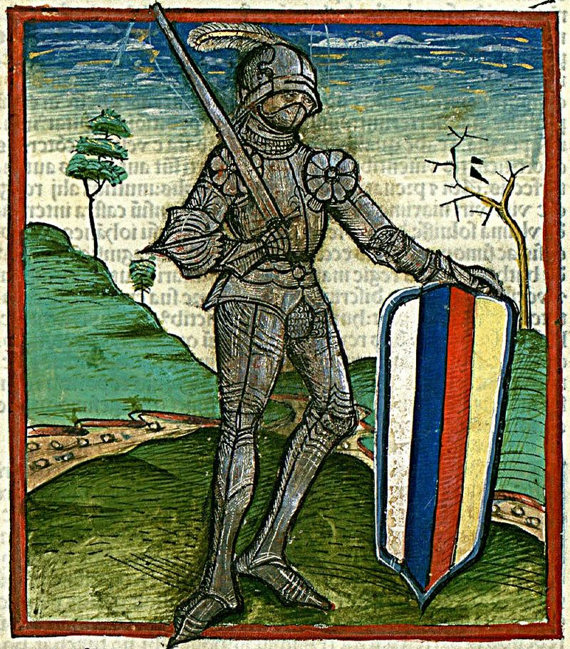

Hunyadi JánosTörökellenes Harcai
Török harcok-1441-ben megzabolázta a Rácországban dúló törököket és Szendrőnél megverte Isák (Iszhák) béget. 1442-ben hatalmas török had zúdult Erdélyre. Mezid bég a törökök vezére arra számított, hogy a magyarok nem képesek egy hirtelen támadást elhárítani. Marosszentimrénél Hunyadi vereséget szenvedett, de utána eredt, és egymás után több ragyogó győzelmet aratott a törökök felett: először Nagyszeben közelében, majd a Déli-Kárpátokban, az erdélyi Vaskapu-hágón, és keleten, az Elő-Kárpátokban, a Jalomica felső folyásánál. 1442-es kora tavaszi győzelmeit kihasználva Hunyadi április 10 és május 25 között betört Havasalföldre, megbuktatta és lefejeztette a törökbarát Vlad Mircea vajdát, helyére a magyarbarát Basarabot, az 1432-ben kivégzett (vagy csatában elesett) II. Dán fiát ültette, átmenetileg helyreállítva magyar befolyást a dél-oláh fejedelemségben. -1443. július 22-én Hunyadi vezetésével és Ulászló király részvételével indult meg a balkáni hosszú hadjárat, melynek során több ütközetben verték meg a velük szemben álló törököket. -A sorozatos győzelmek azt a reményt keltették, hogy a törököt ki lehet verni Európából. Háborút sürgetett a balkáni hadjárat után is. -1444-ben a várnai csata után Vlad Dracul havasalföldi vajda elfogta, és csak a nádor háborús fenyegetésére bocsátotta szabadon. 1445-ben Hunyadi Jánost az öt főkapitány egyikévé, az országos tanács tagjává, 1446. június 5-én pedig már kormányzóvá választották. 1447 szeptemberében Buda vára is Hunyadié lehetett. 1448 februárjában hercegi címet kapott, de ezt soha nem használta. -Győzelmi sorozata után, az 1448-as rigómezei vereség következtében Brankovics György szerb despota kezei közé került, ahonnan csak megalázó feltételek árán bocsátották szabadon. (Az országos tanács – Hunyadiért semmi áldozatot nem sajnálva – 100 000 arany váltságdíjon felül visszaadta Brankovicsnak többek között a magyar kézen lévő szerb várakat is). Hunyadinak ekkor már negyvenezres serege volt. -Hazatérve, Hunyadi az ország erőinek egyesítését és a központi hatalom megerősítését tűzte ki célul, ebben a törekvésében Vitéz János volt segítségére. -1450-ben a császárral kötött egyezményben Hunyadi kénytelen volt elismerni V. László trónigényét. -1453-ban az országgyűlésen lemondott kormányzói tisztjéről, de országos főkapitányi tisztségét és temesi ispánságát megtartotta. Szolgálatai elismeréseképpen a király Beszterce vármegye örökös főispánjává, grófjává tette és címerét kibővítette az ún. besztercei oroszlánokkal. -1454-ben Krusevácnál Feriz bég seregét verte tönkre, s javaslatot tett egy százezer harcosból álló sereg szervezésére és a török Európából való kiűzésére, de nem nyert támogatókra. A Thuróczi-krónika ábrázolása Nándorfehérvár-1456-ban a török megindult, és ostrom alá vette Nándorfehérvárt. 1456. július 21–22-én Hunyadi János saját seregével – köztük 200 hajóval – és a Kapisztrán János által toborzott parasztokból álló keresztesekkel fényes győzelmet aratott a szultán többszörös túlerőben lévő seregén. -Elterjedt vélekedés szerint ez a győzelem Európában is visszhangra talált, s a nagy diadal tiszteletére azóta minden délben, Európa szerte meghúzzák a harangokat, azonban a déli harangszó elrendelése szűk egy hónappal megelőzte Hunyadi győzelmét. A győzelem emlékére vezette be III. Kallixtusz pápa az Urunk színeváltozása ünnepet az egész egyházban. -Hunyadi nem sokkal élte túl győzelmét, Kapisztrán Jánossal együtt áldozatául esett a táborukban kitört pestisjárványnak. 1456. augusztus 11-én Zimonyban halt meg. -Gyulafehérváron a Szent Mihály-székesegyházban temették el. |
|---|